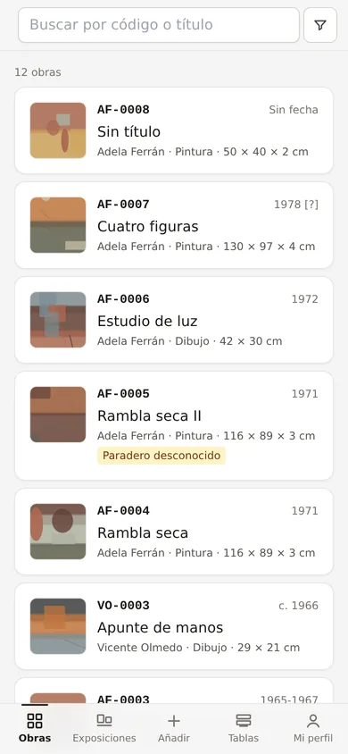
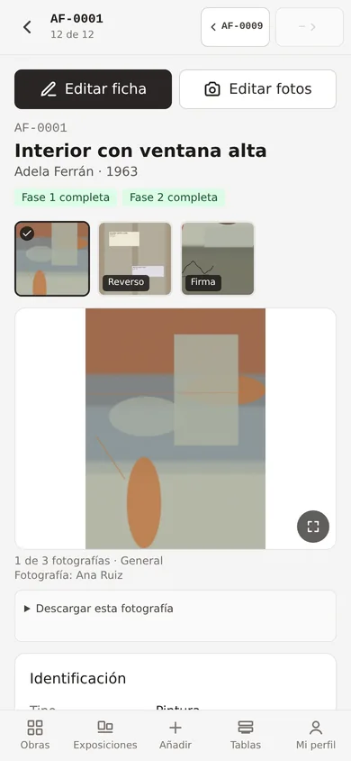
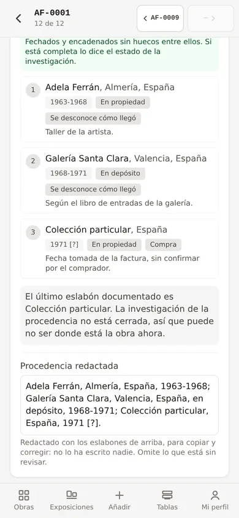
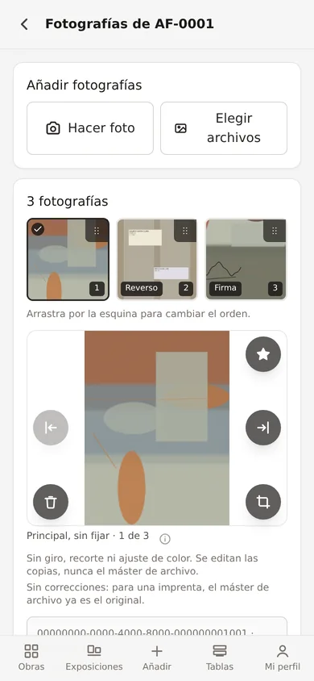
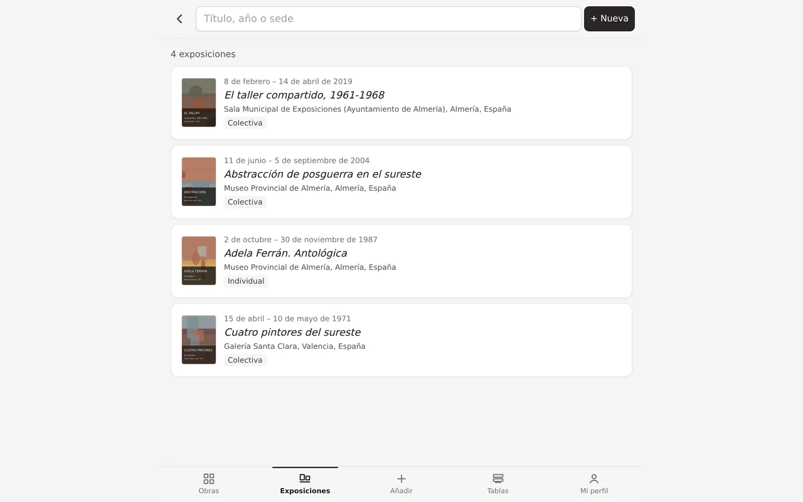

Inventory and catalogue raisonné
Catalogue with the work in front of you, not from memory.
An application for an artist's estate, a gallery or a small museum: you inventory standing in the storeroom, on a phone, and what you write down is already the catalogue raisonné entry.

Who it is for
For anyone facing several hundred or several thousand works and a spreadsheet that no longer copes.
Artists' estates
Heirs and foundations preparing a catalogue raisonné who need the inventory and the research to be the same thing.
Galleries
Owned and consigned stock, with each piece's provenance, exhibition history and documentation where it belongs.
Museums and collections
Collections that need a serious record and a reliable physical location without setting up a documentation department.
What it does
It is built phone-first. The small screen is not an adaptation: it is where cataloguing happens, in a storeroom, one-handed.




Batch capture
Photograph, next number, next work. What repeats —artist, type, location— is set once for the whole run.
“Unreviewed” is not “no”
Every field tells what is still to be researched from what was researched and found nothing. That difference is what gets lost between cataloguers.
Dates you can query
Year, range, “c.” and “[?]” held apart, not as free text. Searching 1971 also finds what is dated between 1968 and 1974.
Provenance with a grammar
Ordered links carrying the capacity of tenure and the means of acquisition, and the line drafted from them.
Exhibitions and bibliography
Venues as entities of their own, catalogue number per show, and references with a BibTeX key and cited pages.
Document archive
Letters, invoices and period photographs classified in a tree, digitised and linked to the work they document.
Photography to archival standards
Thumbnail, working copy and master. Colour corrected against a grey card, and how it was decided is recorded.
Where each work is
A tree of real places — building, room, rack, shelf. Moving a whole rack is done once and every work on it follows.
Nothing is deleted
Every removal is logical, with a wastebasket and a trace of who and when. The change history is kept field by field.
Labels and dossiers
An A5 record with a QR code to stick on the work, and PDF dossiers for an insurer, a loan or a sale.
Three roles
Whoever catalogues, whoever only reads and whoever administers. Permissions are enforced in the database, not on the screen.
Installs like an app
It is added to the phone's home screen and opens like any other. No app store involved.
The screenshots are of the real application with an invented collection: none of the works, artists or collectors shown exist. The interface itself is in Spanish today — translating it is part of what a deployment can cover, so ask.
How it is set up
There is nothing to sign up for. An instance is deployed for your collection, in your own account, and the data is yours from day one.
- We talk about the collection How many works, what is already written and where, and what you want to be able to answer five years from now.
- It gets deployed Database, image storage and application, in your account and on European servers if you prefer.
- Your data comes in Spreadsheets, old record cards, folders of photographs. What already exists is brought over; you do not start from scratch.
- The vocabulary is adjusted Artwork types, techniques, series, venues and the numbering prefix, in the words you already use.
- Training and going live A session with whoever will be cataloguing, with a phone and with works in front of them, which is where it is learnt.
- Maintenance, if you want it Updates, tested backups, and changes to the model when the research calls for them.
The code is free software under the MIT licence: if one day you want to take it elsewhere, or have someone else maintain it, you can, without asking.
How it is built
No server of its own
A web application on managed PostgreSQL. Fewer pieces to maintain and fewer places where it can fall over.
Permissions in the database
Access rules live in the data engine and are checked by automated tests that authenticate as each role.
Images at three levels
The archival master is kept apart and never modified; what travels to the phone is the light copy.
Exportable
It is a standard database. The data comes out whole when needed, for a public website or for a printed catalogue.
Contact
Tell us how many works there are and what state the inventory is in. You get a concrete proposal back, not a form.